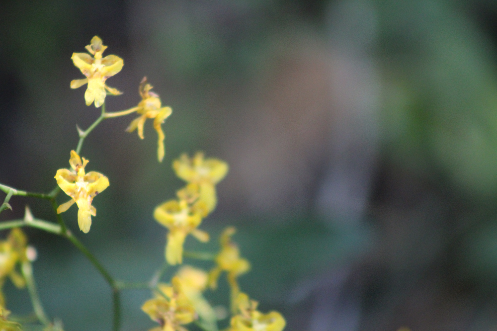

Inicio > Notas críticas > Desde Quisquiza (07 de 20)
Desde Quisquiza (07 de 20)
Orquídeas
Raíces que no tocan el suelo
Esta nota forma parte de una serie escrita desde Quisquiza, en los Andes colombianos, donde territorio y trabajo intelectual ya no están separados. Examina cómo ese cruce transforma mi manera de pensar la memoria, la información y las estructuras que las sostienen. Consulte todas las notas en el índice de esta sección.
No todas las orquídeas de aquí, de Quisquiza, crecen en el suelo. De hecho, la mayoría vive muy por encima.
Como la "lluvia de oro" que abunda en los árboles nativos de mi terreno. Cientos y cientos de flores diminutas, amarillitas, divinas. Una de las más de trescientas y pico de especies del género Oncidium.
Se trata de plantas epífitas. Se agarran a ramas, troncos, corteza vieja, horquillas cubiertas de musgo, ramas caídas y, a veces, a superficies donde uno no esperaría que algo tan preciso (y delicado, e increíble, y hermoso...) pudiera sobrevivir. Sus raíces no se hunden en la tierra: se adhieren, se curvan, se suspenden, y se mantienen expuestas a la niebla, la lluvia, el viento, los insectos, los hongos y todo lo que la montaña decida echarles a la cara.
A primera vista, parecen frágiles. Tallos delgados. Hojas pequeñas. Raíces colgando al descubierto, pálidas y casi imprudentes, como si alguien se hubiera olvidado de cubrirlas adecuadamente.
Pero esa primera impresión es engañosa.
Las orquídeas epífitas no son débiles. En absoluto. Son especialistas del agarre sin posesión. Sus raíces se enganchan a una superficie sin penetrarla como hacen las raíces comunes en la tierra. Absorben la humedad del aire del bosque nuboso. Muchas están envueltas en un tejido externo esponjoso que absorbe rápidamente el agua cuando aparece y se seca de nuevo cuando desaparece.
Eficientes. Teatrales como ellas solas. Bien extravagantes...
(Y ridículamente bellas. Créanme, lo digo después de haberme pasado horas y horas observándolas al microscopio).
Lo importante es esto: no necesitan adueñarse de la superficie que las sustenta.
No convierten la corteza en propiedad. No agotan la rama. No exigen profundidad donde no la hay. Su estabilidad proviene de la precisión, la sincronización y la ligereza. Se adhieren donde las condiciones lo permiten, reciben lo que el entorno les ofrece, y son capaces de sobrevivir suspendidas.
Esto cambia nuestra concepción de la idea de anclaje.
La mayoría imaginamos la estabilidad como profundidad. Elementos que se hunden. Cimientos. Peso. Ocupación. Un dominio firme sobre el sustrato. Cuanto más profunda la raíz, más fuerte la vida.
Pero las orquídeas desafían (elegantemente) esa idea.
Aquí, la estabilidad puede ser aérea. La fijación puede ser tangencial. La continuidad puede depender menos de la posesión que de la relación. Lo que importa no es cuánto terreno se ocupa, sino cómo se interpreta la superficie, la humedad, la sombra, el ángulo, la estructura viva ya presente.
Las epífitas no son independientes en el sentido heroico. Nada lo es aquí. Dependen de los árboles, la niebla, la luz, las asociaciones fúngicas, la circulación del aire y las partículas orgánicas acumuladas en la corteza y el musgo. Pero la dependencia no implica automáticamente la extracción. "Vivir con" no tiene por qué convertirse en "tomar de".
Esa distinción es realmente importante. Muchos sistemas humanos confunden el anclaje con la ocupación. Las instituciones llegan y excavan. Los proyectos llegan y extraen. Las clasificaciones llegan y sobrescriben. Las plataformas llegan y absorben. Lo llaman integración, infraestructura, acceso, innovación, desarrollo.
A veces, se trata simplemente de ocupación. Con un buen maquillaje.
La gestión del conocimiento y la memoria a menudo se comporta como si la estabilidad requiriera control sobre el sustrato: el archivo, la comunidad, el lenguaje, la colección, el territorio, los recuerdos. Para preservar algo, nos lo apropiamos. Para describirlo, lo desvinculamos de su entorno. Para que sea útil, lo forzamos a encajar en nuestras propias estructuras.
La orquídea sugiere otra posibilidad.
Un sistema puede adherirse sin encerrar. Puede recibir sin agotarse. Puede mantenerse presente sin reclamar la propiedad de la superficie que le permite existir. Puede construir continuidad mediante el contacto cuidadoso en lugar de la acumulación.
Eso no la hace inofensiva por defecto. Nada vivo lo es. Las orquídeas siguen compitiendo por la luz, el espacio y la humedad. Siguen participando en la tensión. Pero su forma de agarrarse al mundo revela una gramática presencial diferente: una basada en el contacto, la adaptación y la contención.
Aquí arriba, rodeado de ramas que sostienen pequeños mundos aéreos, resulta más difícil creer que toda estructura deba comenzar excavando cimientos.
Algunas formas de conocimiento no deberían excavar. Deberían aprender a aferrarse con ligereza, beber de la niebla, dejar la corteza viva y mantenerse lo suficientemente humildes como para saber que "apoyo" no es lo mismo que "posesión".